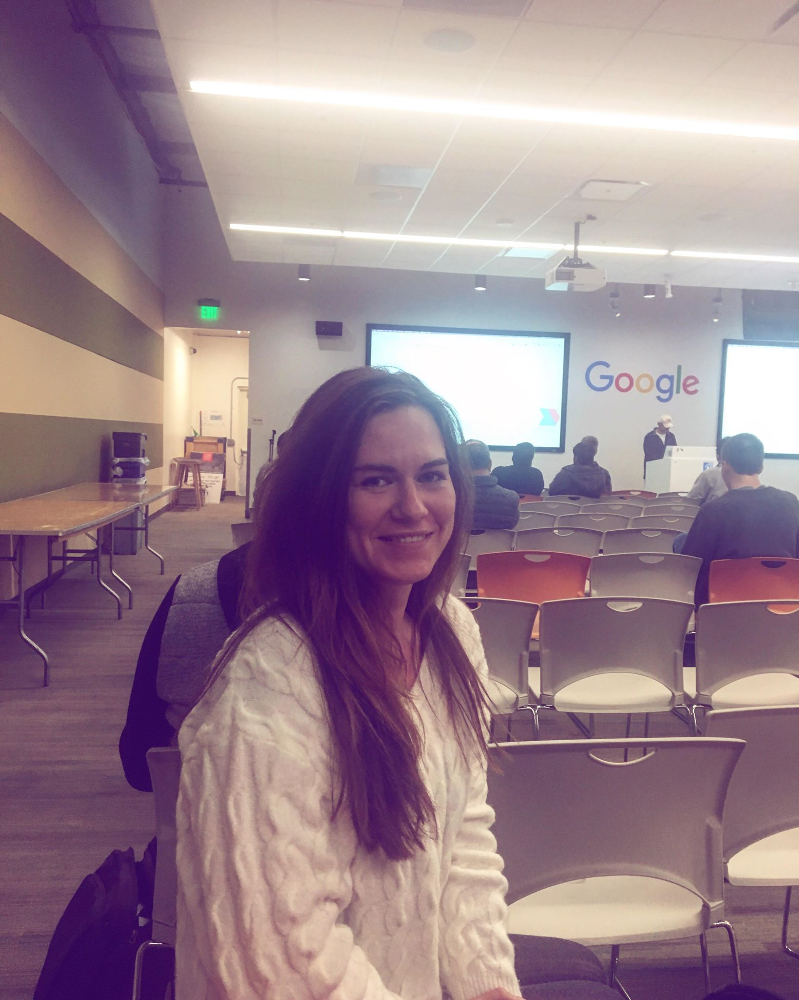

I have a lot of minuses, but the main is - to do everything at the very last second. Same story here. For whole semestr I couldn't find and attend a meetup.
Why? Cause I really need to rethink about my time and life in general =).
And finally, week from due date for everything - I made it. It wasn't easy, and I didn't have many options. So I decided to choose MeetUP at Google. First, cause it is in Google headquaters in Mountain View, so even if MeetUp won't be something incredible for me - I've been to Google. I went there around 5pm from Ocean Campus. Guess what? Yessss! Traffic! Horrible, slow and sometimes even wet because of rain. 1h 19min and here I am! At Google Developer Group At Sillicon Valley.
Google Developer Group Silicon Valley meets on the first Wednesday of the month at the GooglePlex in Mountain View. It is free to go there, but you will have to reserve the spot!
Topic of this meetup was quite narrow: "Kotlin with Android and Kotlin Coroutines".
Kotlin is a statically typed programming language that runs on the Java virtual machine and also can be compiled to JavaScript source code or use the LLVM compiler infrastructure. It is sponsored and developed by JetBrains.
It was very usefull to hear how mobile development becoming progressive. Kotlin is inter-operable with java, Null safety, Extension function, Data class etc ...
Because of these great features, the Android core team has adopted Kotlin as an officially supported language.
I got bunch of new "programing" information wich I still trying to take in.
Also there was free Pizza and many young (and older) people, who motivated me to go forward in my attempts to become a real Programer
~THE END ~